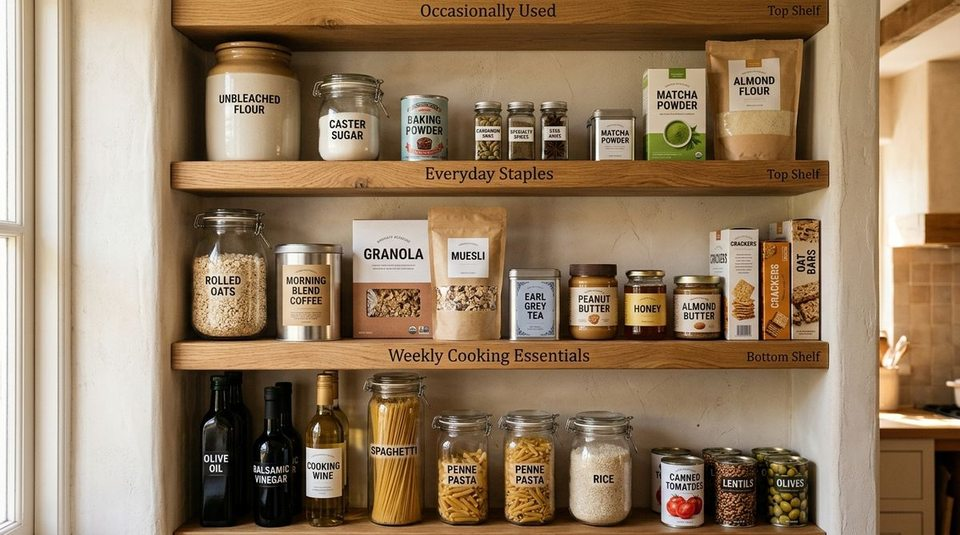

Most pantry organization guides focus heavily on uniform containers, aesthetic labels, and maximizing physical storage space. But for most households, the real daily question is much simpler: "What do I reach for most often?"
When cooking in a compact apartment kitchen, a pantry can be physically tidy while still feeling frustrating to use. You open the cabinet door to make breakfast, but the rolled oats and coffee beans are tucked behind a five-pound bag of specialty baking flour you haven't touched since the holidays. Every morning begins with shuffling jars and moving boxes just to grab a routine staple.
The core principle is simple: Prime visibility should go to high-frequency foods.
A pantry shelf does not just have volumetric capacity—it has limited visual and access priority. The easiest-to-see and easiest-to-reach zones should naturally support your real daily routines, while occasional ingredients take a secondary position. This is not an inflexible aesthetic law; it is a practical design principle that makes everyday cooking effortless without buying a single new container.
Why Pantry Visibility Matters More Than Storage Capacity
In many kitchens, the frustration of a "messy" pantry is actually a visibility bottleneck. Several practical dynamics cause frequently used foods to become buried:
- Visual Scanning Friction: When twenty different food packages compete for your line of sight, your brain expends unnecessary effort scanning past specialty ingredients to find routine staples.
- Physical Reach Barriers: Having to move two heavy jars to reach your morning tea bag adds compound friction to daily meal preparation.
- Assumed vs. Actual Behavior: Pantries are often arranged based on food categories (e.g., all baking goods grouped together, all grains grouped together) rather than how frequently those items are actually consumed.
Understanding this distinction helps you realize that you don't necessarily need more shelving or bins—you simply need to re-align shelf placement with actual household habits. For foundational shelf depth guidelines, see our guide on 5 pantry depth and visibility rules for small kitchens.
The 3-Tier Visibility Hierarchy Framework
To eliminate daily kitchen friction, categorize your pantry inventory into three distinct operational tiers:

| Tier Level | Usage Frequency | Typical Foods | Core Placement Rule |
|---|---|---|---|
| 01 — EVERYDAY | Used daily (1–3x per day) | Rolled oats, coffee/tea, daily cereal, peanut butter, frequent snacks | Keep in prime eye-level and direct front-row view. |
| 02 — WEEKLY | Used 1–3x per week | Pasta, rice, canned beans, olive oil, dinner sauces, broths | Keep accessible, but secondary (lower or slightly higher shelves). |
| 03 — OCCASIONAL | Used monthly or seasonally | Baking flour, specialty spices, holiday baking sugars, specialty marinades | Keep safe and accessible, but out of prime direct sightlines. |
"Secondary does not mean impossible to reach. It simply means non-daily items should not block your daily vision."
Note that this is distinct from managing opened packages. While our guide on organizing a pantry use-first zone addresses opened items that require prompt consumption to prevent waste, the frequency hierarchy governs your pantry's permanent architectural layout.
How to Identify Your Real Frequency of Use
To establish an effective pantry hierarchy, audit your household's actual eating patterns rather than idealized cooking aspirations. Ask yourself these five diagnostic questions:
- What do I reach for every single morning and evening? (Coffee, oatmeal, breakfast cereal, cooking salt).
- What do I repeatedly have to search for behind other items? (The item you constantly dig for is in the wrong tier).
- What naturally migrates to the front counter because putting it away is annoying? (Items that live on your counter often indicate a lack of prime pantry visibility).
- What items have remained untouched for over three weeks? (Baking extracts, specialty noodles, seasonal spices).
- What currently occupies the most accessible eye-level shelf? (Is it everyday essentials, or heavy boxes of specialty baking supplies?).
The 10-Second Pantry Visibility Test
Before rearranging your pantry, perform this fast, repeatable diagnostic test:
- Step 1: Stand naturally in front of your open pantry cabinet.
- Step 2: Name the three food items you used most frequently over the last 48 hours.
- Step 3: Look directly at the shelves. Can you spot all three items within three seconds without moving any other package?
- Step 4: Look at what is currently occupying the exact center of your eye-level shelf. Is that item used daily, or is it taking up prime real estate unnecessarily?
- Step 5: If an occasional item is blocking an everyday staple, swap their shelf positions immediately.
To eliminate unused clutter that might be crowding your shelves, review our breakdown of 7 things wasting space in your pantry right now.
How to Rearrange Shelves Without Buying Organizers
You do not need to purchase clear plastic bins or uniform jars to implement frequency zoning. Work with your existing cabinetry using these zero-cost steps:
- Claim the Eye-Level Horizon: The shelf between your chest and eye level is your most valuable storage zone. Reserve this entire tier exclusively for Tier 01 (Everyday) foods.
- Assign the Waist-to-Knee Tier: Place Tier 02 (Weekly) cooking staples—such as dry pasta boxes, canned legumes, and cooking oils—on the shelf directly below your everyday tier.
- Move Bulk & Baking High or Low: Move Tier 03 (Occasional) baking flours, specialty powders, and party snacks to upper shelves or deeper floor nooks.
- Avoid Deep Stacking for Daily Items: Never place a Tier 01 everyday food behind a Tier 03 occasional item. If items must share shelf depth, always place the higher-frequency staple in front.
Real Small-Apartment Pantry Examples
Here is how a frequency-based rebalance transforms common small-space pantries:
Example 1: The Breakfast Rush
Before: A small two-shelf kitchen cupboard has baking flour, brown sugar, and holiday cookie cutters on the front of the eye-level shelf. Everyday quick oats and tea bags are wedged behind the flour bag, requiring a two-handed shuffle every morning.
After: The baking flour and sugar move up to the top shelf. The oats, coffee beans, and tea canister occupy the front center of the middle shelf. Breakfast preparation now requires zero shuffling.
Example 2: The Dinner Cooking Zone
Before: Dinner pasta and olive oil are stored on the bottom shelf behind bulk soda cans, while specialty Asian noodles used once a month sit at eye level.
After: Everyday pasta and cooking oils move to the forward edge of the waist-height shelf, while specialty noodles shift to the back corner. Dinner prep flows smoothly without crouching or digging.
When NOT to Follow the Hierarchy (Safety & Preservation)
While frequency of use is a powerful organizational tool, it should never compromise food safety or household stability:
- Weight and Heavy Bulk: Extremely heavy items (such as a 20-lb bag of rice or bulk cooking oil jugs) should remain on lower shelves near the floor to avoid shelf sag or injury, even if used frequently.
- Temperature & Humidity: Follow manufacturer packaging guidance. Moisture-sensitive products should never sit near ovens, dishwashers, or direct sunlight regardless of frequency.
- Child Safety & Household Access: Fragile glass jars or adult supplements should remain out of reach of young children, overriding convenience.
The Simple Pantry Rule: Best Visibility for Highest Use
Whenever you unload groceries or feel clutter creeping back into your pantry, remember this guiding rule:
GIVE YOUR BEST VISIBILITY
TO WHAT YOU USE MOST.
EVERYDAY → WEEKLY → OCCASIONAL
Your pantry doesn't need to look like an influencer showroom. It simply needs to make your household routines effortless, quiet, and fast.
Maintaining Your Frequency System Over Time
Eating habits evolve naturally with seasons and lifestyle changes. A breakfast cereal that is "everyday" in the summer may become "occasional" during hot porridge winter months.
Maintain your system with a simple, relaxed cycle: OBSERVE → ADJUST → USE → REASSESS.
- Notice when a staple is no longer being consumed regularly.
- Shift it gracefully to Tier 02 or 03.
- Promote your new seasonal staples into Tier 01.
For more foundational kitchen organization principles, explore our complete library of pantry organization ideas.
Frequently Asked Questions
If a daily staple is too large or heavy for eye-level shelving (such as a 10-lb flour bag or bulk rice container), keep the bulk bag on a lower shelf and decant a small 1-week portion into a lightweight jar for your prime eye-level shelf.
A Use-First zone is a temporary staging area for opened or perishable items that must be consumed quickly to prevent food waste. The Frequency Hierarchy is the permanent macro-layout of your entire pantry based on how often foods are used.
Not at all. Frequency zoning is entirely about spatial positioning and line of sight. Original packaging works perfectly well as long as daily staples occupy front-row, eye-level positions.
Saveable Pantry Visibility Checklist
Pantry Visibility Check
- ✓ SEE: Identify your 3 most-used daily food staples.
- ✓ PRIORITIZE: Assign daily staples to eye-level front-row positions.
- ✓ PLACE: Shift weekly cooking essentials to secondary shelves and occasional baking to top tiers.
- ✓ TEST: Verify you can grab daily staples in under three seconds with zero obstacles.
Pinterest Framework: SEE → PRIORITIZE → PLACE → TEST
Are you 18-24 or a Student? Get 6 Months of Prime for $0!
Limited Time Offer (Ends Oct 9): Enjoy fast, free shipping, unlimited streaming, $0 food delivery (Grubhub+), fuel savings (10¢/gal), Prime Reading, unlimited Amazon Photos storage, and exclusive grocery deals. Claim your 6-month free trial of Prime for Young Adults today.
Try Prime for Free →